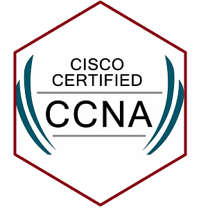

Learn the skills to become a Network Engineer

Core routing/switching concepts, IPv4/IPv6 addressing, subnetting, and basic architecture (routers, switches, cabling).
VLANs, trunking (802.1Q), Inter-VLAN routing, Spanning Tree Protocol (STP), EtherChannel, and basic wireless principles.
Static routing, OSPFv2 (single-area configuration), and how routers make forwarding decisions.
NAT, NTP, DHCP, SSH, and basic QoS concepts.
Threat vectors, access control lists (ACLs), port security, VPNs, and wireless security protocols (WPA2/WPA3).
Basics of software-defined networking (SDN), controller architectures, REST APIs, and configuration management tools (JSON, Ansible, Puppet, Chef).
CSS is used to style a webpage
| No | LAB |
|---|---|
| 1 | Enterprise Switching Core (VLAN, Trunk, EtherChannel, STP) |
| 2 | Inter-VLAN Routing & Gateway Redundancy (SVI & HSRP) |
| 3 | Multi-Area OSPFv2 & OSPFv3 Design |
| 4 | eBGP Multi-homing & Policy Routing |
| 5 | Security & Traffic Filtering (ACLs & CoPP) (SVI & HSRP) |
| 6 | Secure Remote Access & Infrastructure Hardening |
| 7 | Edge Services (DHCP Relay, NTP, Syslog) |
| 8 | NAT (Dynamic, PAT & Port Forwarding) |
| 9 | Comprehensive Troubleshooting Mega-Lab |
Cách cài EVE-NG